3D-Anhänger Schulanfang – Oktaeder, Diamant und Kugel zum Ausmalen und Basteln, 3-fach differenziert (Klasse 3/4)

3D-Anhänger Sommer – Oktaeder, Diamant und Kugel zum Ausmalen und Basteln, 3-fach differenziert (Klasse 3/4)

3D-Anhänger Ostern – Oktaeder, Diamant und Kugel zum Ausmalen und Basteln, 3-fach differenziert (Klasse 3/4)

3D-Anhänger Fasching – Oktaeder, Diamant und Kugel zum Ausmalen und Basteln, 3-fach differenziert (Klasse 3/4)

3D-Anhänger Frühling – Oktaeder, Diamant und Kugel zum Ausmalen und Basteln, 3-fach differenziert (Klasse 3/4)

3D-Anhänger Herzen und Muttertag – Oktaeder, Diamant und Kugel zum Ausmalen und Basteln, 3-fach differenziert (Klasse 3/4)
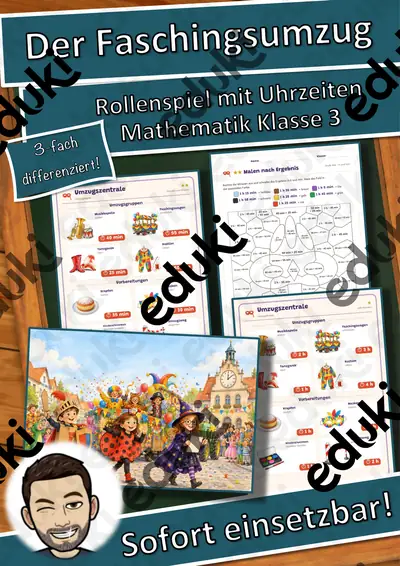
Der Faschingsumzug – Rollenspiel Zeitspannen und Fahrplan, Anfang und Ende berechnen, 3-fach differenziert (Klasse 3)

3D-Anhänger Herbst – Oktaeder, Diamant und Kugel zum Ausmalen und Basteln, 3-fach differenziert (Klasse 3/4)

Materialpaket Advent und Winter für die 6. Klasse: 7 Lesespurgeschichten mit Rätselaufgaben (Weihnachtsbasar, Saturnalien, Lichterfeste & mehr)

Materialpaket Rechenwelten im Winter für die 3. Klasse: 8 Mathe-Rollenspiele, 3-fach differenziert (Weihnachtsbäckerei, Lichterpark, Eisbahn & mehr)

Materialpaket Winter und Advent für die 4. Klasse: 5 Lesespurgeschichten mit Rätselaufgaben (Weihnachtsmarkt, Fröbelsterne, Sternbilder & mehr)

Materialpaket Schnee, Eis und Wintersport für die 3. Klasse: 10 Lesespurgeschichten mit Rätselaufgaben (Rodelbahn, Eisstock, Schneelabor & mehr)

Materialpaket Natur im Winter für die 3. Klasse: 10 Lesespurgeschichten mit Rätselaufgaben (Wintertiere, Winterwald, Schneespuren & mehr)

Materialpaket Advent und Weihnachten für die 3. Klasse: 8 Lesespurgeschichten mit Rätselaufgaben (Barbarazweige, Lebkuchen, Santa Lucia, Sternsinger & mehr)

3D-Anhänger Winter – Oktaeder, Diamant und Kugel zum Ausmalen und Basteln, 3-fach differenziert (Klasse 3/4)

3D-Anhänger Advent – Oktaeder, Diamant und Kugel zum Ausmalen und Basteln, 3-fach differenziert (Klasse 3/4)
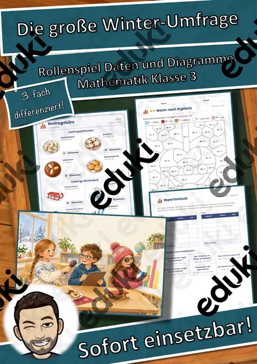
Die große Winter-Umfrage – Rollenspiel Daten, Tabellen und Säulendiagramme, 3-fach differenziert (Klasse 3)

St.-Martins-Laterne aus einem Blatt – falten, einschneiden, rollen, mit Martinsgeschichte, 3-fach differenziert (Klasse 2/3)

Herbst-Klappkarte Eichhörnchen – Figurenkarte basteln mit Sachtext, 3-fach differenziert (Tiere im Herbst, Klasse 2/3)

Flatter-Fledermaus am Stab – bewegliche Bastelfigur mit Sachtext, 3-fach differenziert (Halloween/Herbst, Klasse 2/3)

Spinnen-Rätsel-Faltkarte – Halloween-Rätsel lesen und schreiben, Pop-up-Spinne, 3-fach differenziert (Klasse 2/3)

Mein Grusel-Meter – Halloween-Drehkarte basteln, Adjektive steigern und vergleichen, 3-fach differenziert (Klasse 2/3)

Halloween Wackel-Skelett – Bastelvorlage, Sachtext Skelett und Knochen beschriften, 3-fach differenziert (Klasse 3/4)

Halloween-Armbanduhr aus Papier – Uhrzeit lernen mit Bastelvorlage, 3-fach differenziert (Klasse 2/3)

3D-Zauberbild Lebensraum Wald – Umkehrperspektive basteln, Sachtext und Forscherauftrag, 3-fach differenziert (Klasse 3/4)

Klapp-Spukhaus zu Halloween – Bastelvorlage mit Schreibanlass und Wortspeicher, 3-fach differenziert (Klasse 3/4)

Halloween-Kegelfiguren – Körper Kegel basteln und erforschen, 3-fach differenziert (Mathematik/Kunst Klasse 3/4)

Pop-up-Karten Weihnachten – Bastelvorlage mit Stufen-Pop-up, Motiven und Weihnachtsgruß, 3-fach differenziert (Klasse 3/4)

Papier-Schneeflocken falten und schneiden – Winter-Bastelvorlage mit Sachtext, 3-fach differenziert (Klasse 2/3)

3D-Anhänger Halloween – Oktaeder, Diamant und Kugel zum Ausmalen und Basteln, 3-fach differenziert (Klasse 3/4)

Spiral-Gespenster zum Aufhängen – Halloween-Bastelvorlage mit Lesetext, 3-fach differenziert (Klasse 2/3)
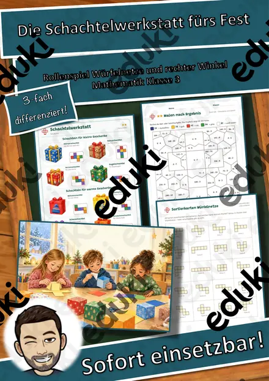
Die Schachtelwerkstatt fürs Fest – Rollenspiel Würfelnetze und rechter Winkel, 3-fach differenziert (Klasse 3)
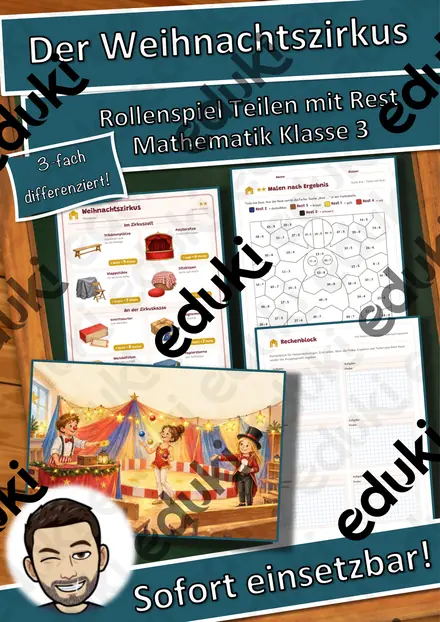
Der Weihnachtszirkus – Rollenspiel Division mit Rest, 3-fach differenziert (Klasse 3)
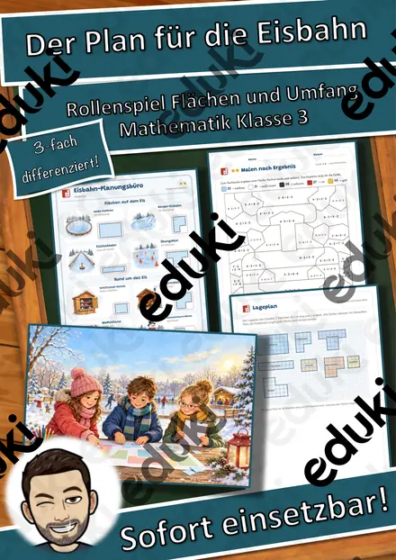
Der Plan für die Eisbahn – Rollenspiel Lagepläne, Flächen und Umfang, 3-fach differenziert (Klasse 3)
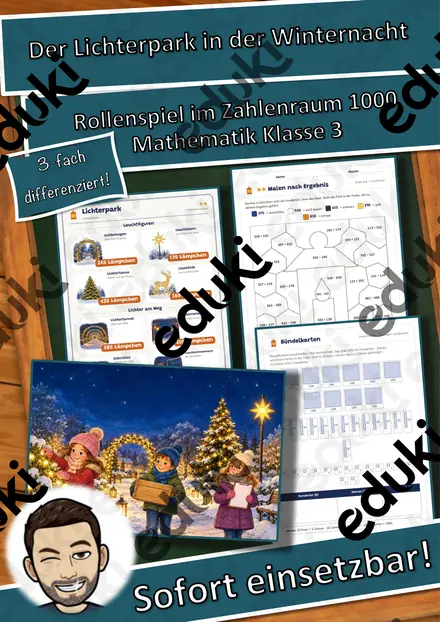
Der Lichterpark in der Winternacht – Rollenspiel Zahlenraum bis 1000, halbschriftlich und schriftlich rechnen, 3-fach differenziert (Klasse 3)
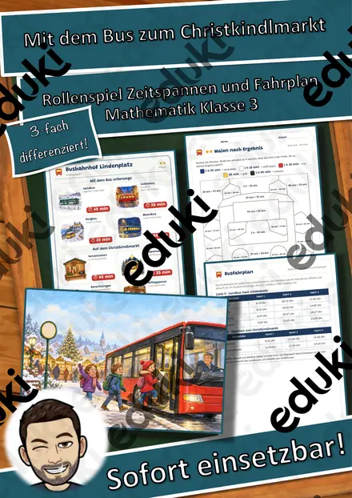
Mit dem Bus zum Christkindlmarkt – Rollenspiel Zeitspannen, Busfahrplan und Umsteigen, 3-fach differenziert (Klasse 3)
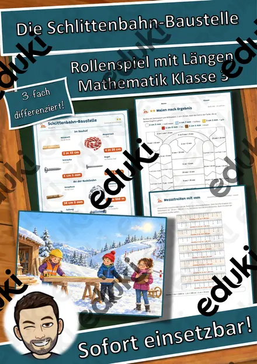
Die Schlittenbahn-Baustelle – Rollenspiel Längen km, m, cm und mm, 3-fach differenziert (Klasse 3)

Lesespaziergang: Frühblüher im Garten und im Wald – 3-fach differenziert (★/★★/★★★), Klasse 2–4

Lesespaziergang: Verkleiden und Feiern im Fasching – 3-fach differenziert (★/★★/★★★), Klasse 2–4

Lesespaziergang: Tiere in Eis und Wüste – 3-fach differenziert (★/★★/★★★), Klasse 2–4

Lesespaziergang: Obst und Gemüse im Winter – 3-fach differenziert (★/★★/★★★), Klasse 2–4

Lesespaziergang: Spuren im Schnee – 3-fach differenziert (★/★★/★★★), Klasse 2–4

Lesespaziergang: Plätzchen backen im Advent – 3-fach differenziert (★/★★/★★★), Klasse 2–4
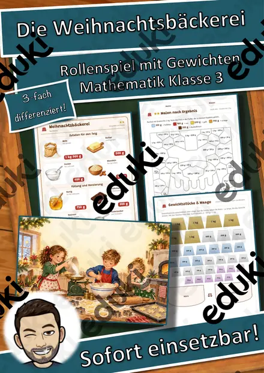
Die Weihnachtsbäckerei – Rollenspiel Gewichte kg und g, Rezepte verdoppeln, 3-fach differenziert (Klasse 3)

Lesespaziergang: Zugvögel im Herbst – 3-fach differenziert (★/★★/★★★), Klasse 2–4

Lesespaziergang: Blätter und Bäume im Herbst – 3-fach differenziert (★/★★/★★★), Klasse 2–4

Lesespaziergang: Vorräte der Tiere im Herbst – 3-fach differenziert (★/★★/★★★), Klasse 2–4
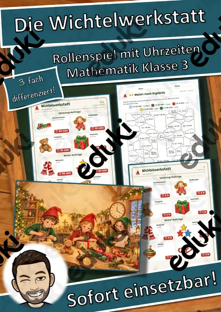
Die Wichtelwerkstatt – Rollenspiel Zeitspannen, Anfang und Ende berechnen, 3-fach differenziert (Klasse 3)

Lesespaziergang: Tiere im Winterwald – 3-fach differenziert (★/★★/★★★), Klasse 2–4

Lesespaziergang: Igel im Herbst – 3-fach differenziert (★/★★/★★★), Klasse 2–4

Lesespaziergang: Halloween-Nacht im Kürbisgarten – 3-fach differenziert (★/★★/★★★), Klasse 2–4
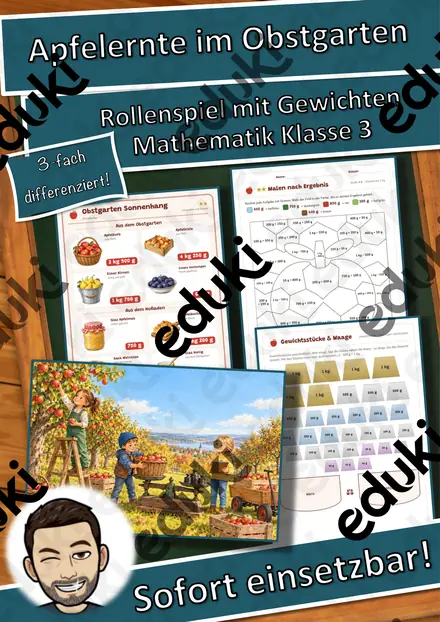
Apfelernte im Obstgarten – Rollenspiel Gewichte kg und g, 3-fach differenziert (Klasse 3)

Rechnen im Winter-Café – Rollenspiel Rechnen mit Geld, 3-fach differenziert (Klasse 2–4)

Materialpaket Herbst-Lesespuren für die 3. Klasse: 7 Lesespurgeschichten mit Rätselaufgaben (Kürbis, Igel, Laterne, Halloween & mehr)
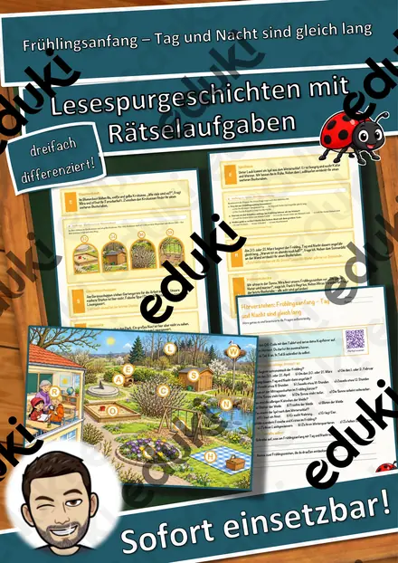
Frühlingsanfang – Tag und Nacht sind gleich lang – Lesespurgeschichte mit Rätselaufgaben (Klasse 3)
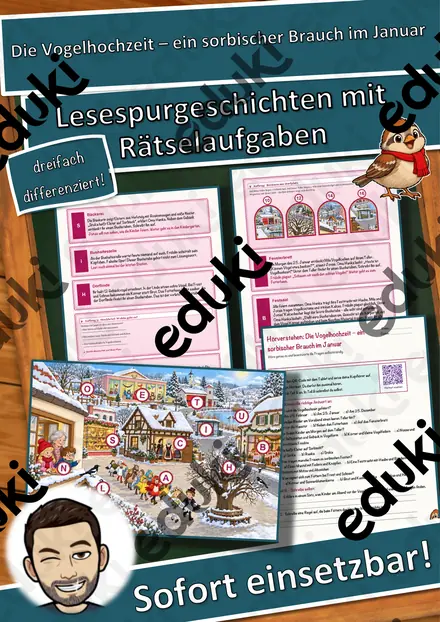
Die Vogelhochzeit – ein sorbischer Brauch im Januar – Lesespurgeschichte mit Rätselaufgaben (Klasse 3)
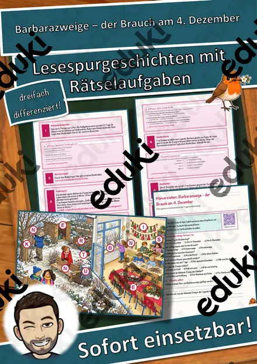
Barbarazweige – der Brauch am 4. Dezember – Lesespurgeschichte mit Rätselaufgaben (Klasse 3)
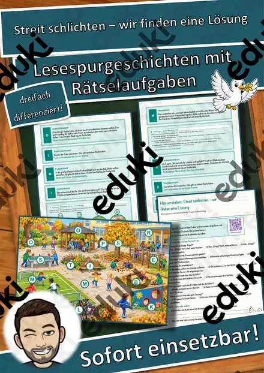
Streit schlichten – wir finden eine Lösung – Lesespurgeschichte mit Rätselaufgaben (Klasse 3)
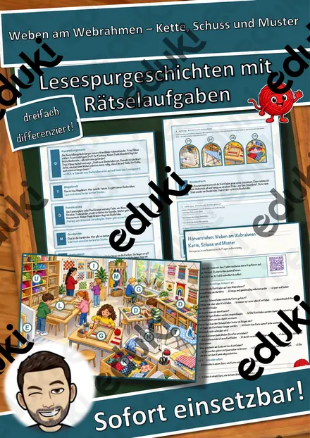
Weben am Webrahmen – Kette, Schuss und Muster – Lesespurgeschichte mit Rätselaufgaben (Klasse 3)
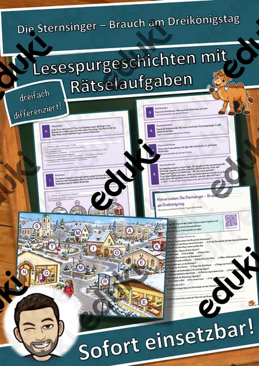
Die Sternsinger – Brauch am Dreikönigstag – Lesespurgeschichte mit Rätselaufgaben (Klasse 3)

Santa Lucia – das Lichterfest im Dezember – Lesespurgeschichte mit Rätselaufgaben (Klasse 3)

Die Gleichnisse Jesu – verlorenes Schaf, barmherziger Samariter – Lesespurgeschichte mit Rätselaufgaben (Klasse 3)
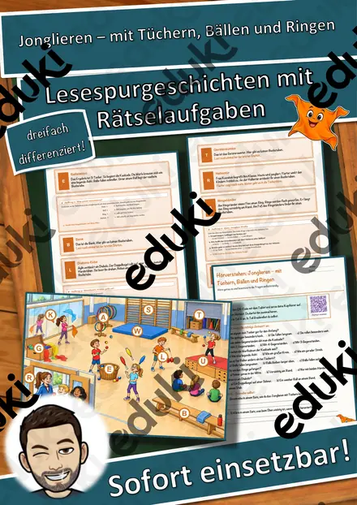
Jonglieren – mit Tüchern, Bällen und Ringen – Lesespurgeschichte mit Rätselaufgaben (Klasse 3)
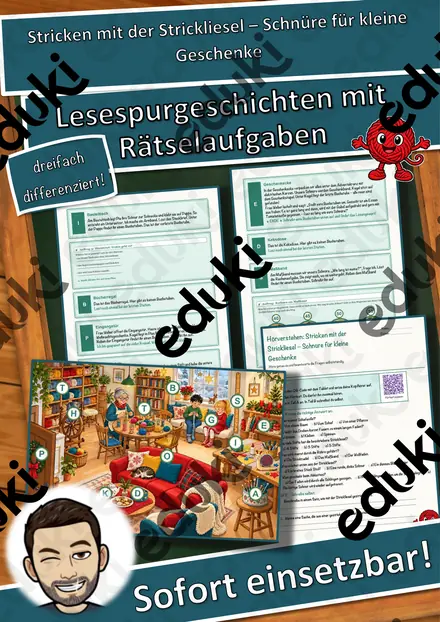
Stricken mit der Strickliesel – Schnüre für kleine Geschenke – Lesespurgeschichte mit Rätselaufgaben (Klasse 3)

Herbstgedichte – reimen, vortragen, selbst dichten – Lesespurgeschichte mit Rätselaufgaben (Klasse 3)

Lichterfeste in den Religionen – Diwali, Chanukka, Martinstag, Advent – Lesespurgeschichte mit Rätselaufgaben (Klasse 6)

Halloween – woher das Fest kommt und wie man es in Irland feiert – Lesespurgeschichte mit Rätselaufgaben (Klasse 3)
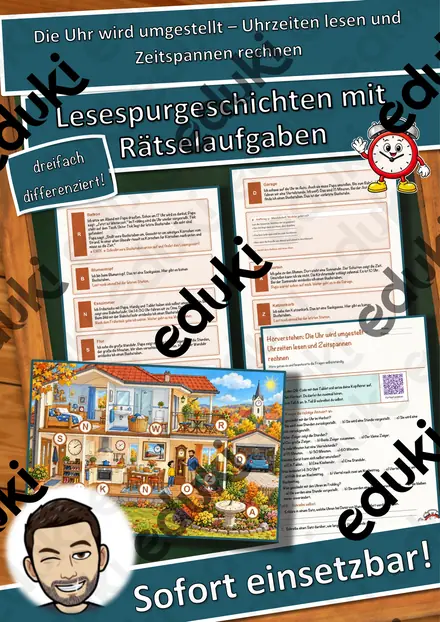
Die Uhr wird umgestellt – Uhrzeiten lesen und Zeitspannen rechnen – Lesespurgeschichte mit Rätselaufgaben (Klasse 3)
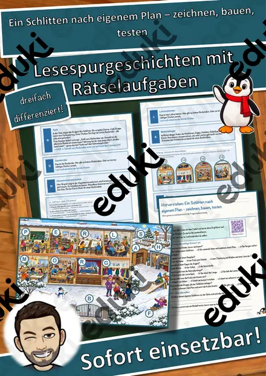
Ein Schlitten nach eigenem Plan – zeichnen, bauen, testen – Lesespurgeschichte mit Rätselaufgaben (Klasse 3)
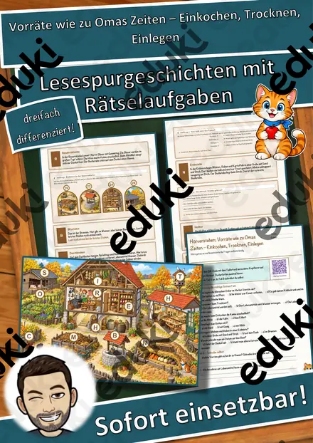
Vorräte wie zu Omas Zeiten – Einkochen, Trocknen, Einlegen – Lesespurgeschichte mit Rätselaufgaben (Klasse 3)
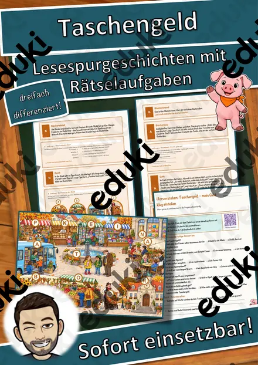
Taschengeld – mein Geld klug einteilen – Lesespurgeschichte mit Rätselaufgaben (Klasse 3)
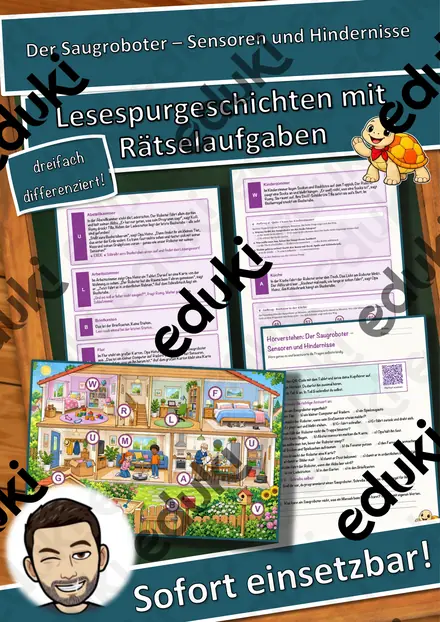
Der Saugroboter – Sensoren und Hindernisse – Lesespurgeschichte mit Rätselaufgaben (Klasse 3)
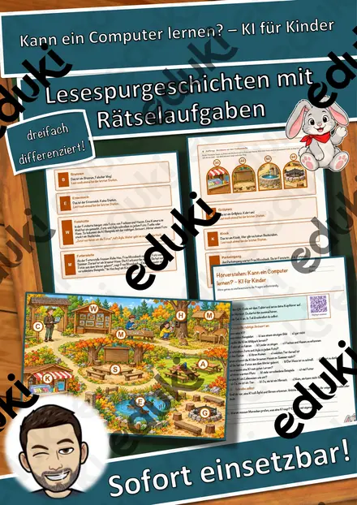
Kann ein Computer lernen? – KI für Kinder – Lesespurgeschichte mit Rätselaufgaben (Klasse 3)
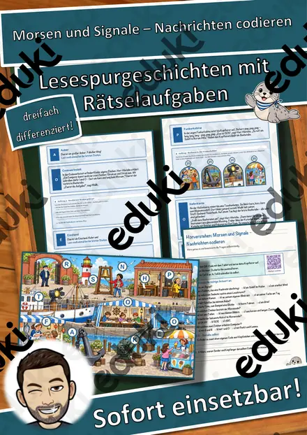
Morsen und Signale – Nachrichten codieren – Lesespurgeschichte mit Rätselaufgaben (Klasse 3)
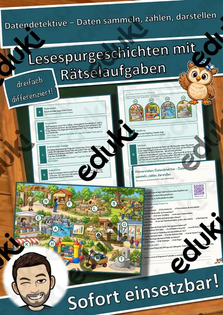
Datendetektive – Daten sammeln, zählen, darstellen – Lesespurgeschichte mit Rätselaufgaben (Klasse 3)
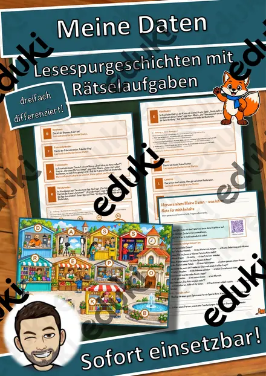
Meine Daten – was ich im Netz für mich behalte – Lesespurgeschichte mit Rätselaufgaben (Klasse 3)
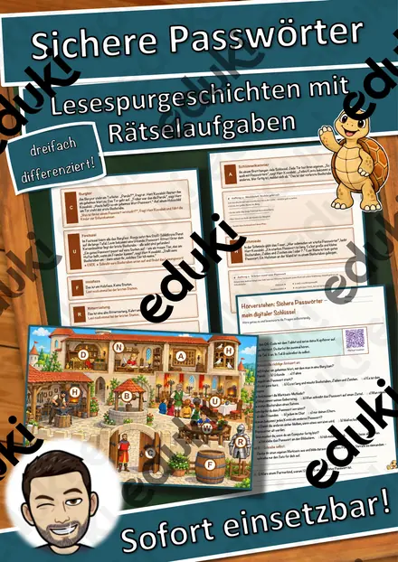
Sichere Passwörter – mein digitaler Schlüssel – Lesespurgeschichte mit Rätselaufgaben (Klasse 3)
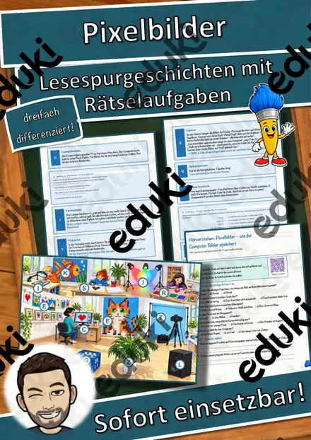
Pixelbilder – wie der Computer Bilder speichert – Lesespurgeschichte mit Rätselaufgaben (Klasse 3)
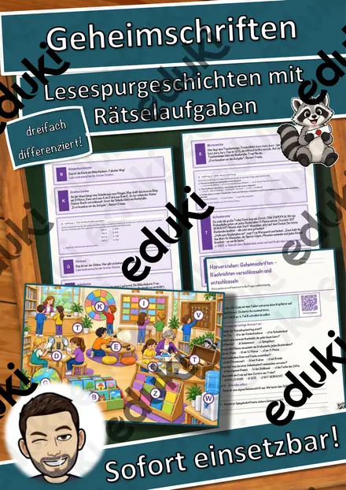
Geheimschriften – Nachrichten verschlüsseln und entschlüsseln – Lesespurgeschichte mit Rätselaufgaben (Klasse 3)

Die Bundesjugendspiele – laufen, springen, werfen – Lesespurgeschichte mit Rätselaufgaben (Klasse 3)
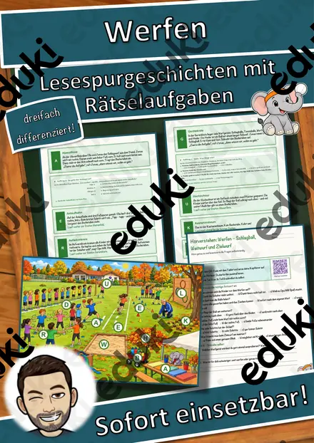
Werfen – Schlagball, Weitwurf und Zielwurf – Lesespurgeschichte mit Rätselaufgaben (Klasse 3)
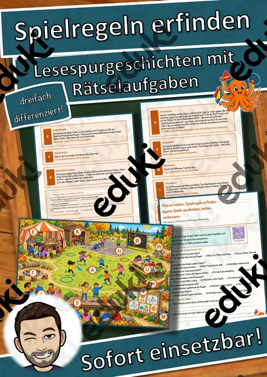
Spielregeln erfinden – eigene Spiele ausdenken, testen, verbessern – Lesespurgeschichte mit Rätselaufgaben (Klasse 3)

Spiele aus aller Welt – hüpfen, werfen, fangen wie anderswo – Lesespurgeschichte mit Rätselaufgaben (Klasse 3)
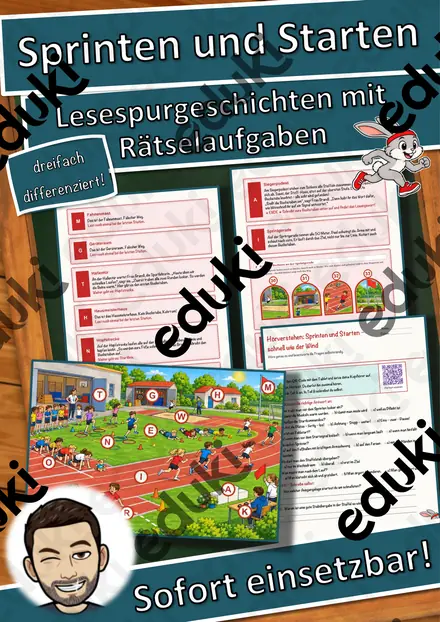
Sprinten und Starten – schnell wie der Wind – Lesespurgeschichte mit Rätselaufgaben (Klasse 3)

Fußball – Regeln, Positionen, Spielidee – Lesespurgeschichte mit Rätselaufgaben (Klasse 3)
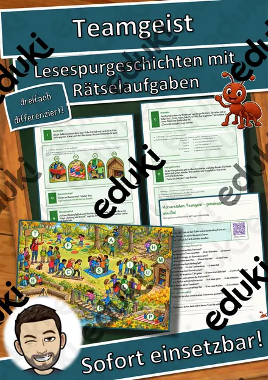
Teamgeist – gemeinsam ans Ziel – Lesespurgeschichte mit Rätselaufgaben (Klasse 3)
Aufwärmen – warum der Körper Anlauf braucht – Lesespurgeschichte mit Rätselaufgaben (Klasse 3)

Der Kanon – eine Melodie, viele Stimmen – Lesespurgeschichte mit Rätselaufgaben (Klasse 3)
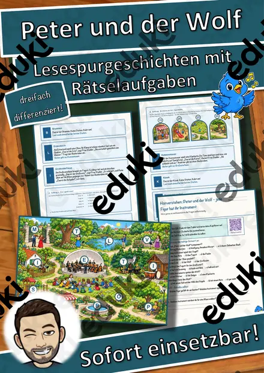
Peter und der Wolf – jede Figur hat ihr Instrument – Lesespurgeschichte mit Rätselaufgaben (Klasse 3)

Musikinstrumente der Welt – eine Reise durchs Museum – Lesespurgeschichte mit Rätselaufgaben (Klasse 3)
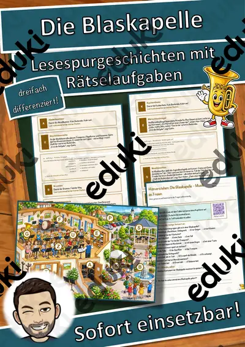
Die Blaskapelle – Musik im Freien – Lesespurgeschichte mit Rätselaufgaben (Klasse 3)

Weihnachtslieder – Musik im Advent – Lesespurgeschichte mit Rätselaufgaben (Klasse 3)
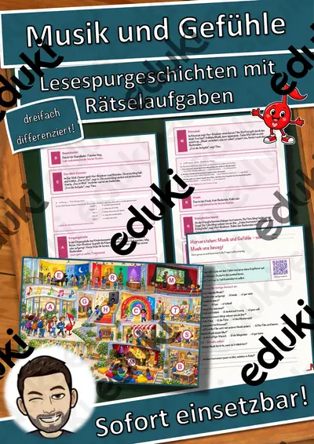
Musik und Gefühle – wie Musik uns bewegt – Lesespurgeschichte mit Rätselaufgaben (Klasse 3)

Volkstanz und Tanzfest – Tänze im Takt – Lesespurgeschichte mit Rätselaufgaben (Klasse 3)

Wolfgang Amadeus Mozart – Lesespurgeschichte mit Rätselaufgaben (Klasse 3)

Takt und Rhythmus – Lesespurgeschichte mit Rätselaufgaben (Klasse 3)
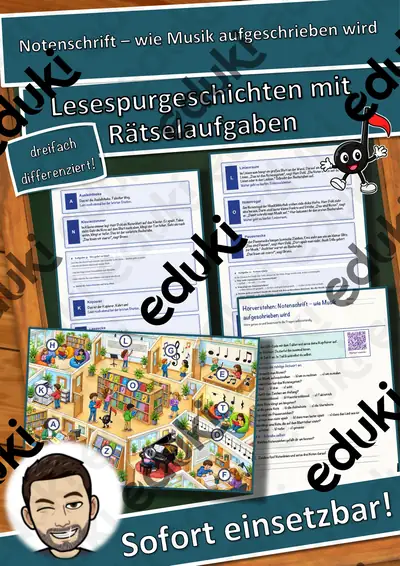
Notenschrift – wie Musik aufgeschrieben wird – Lesespurgeschichte mit Rätselaufgaben (Klasse 3)
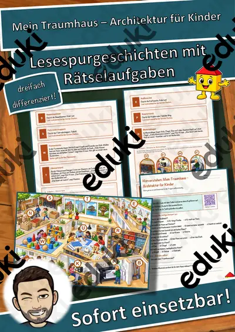
Mein Traumhaus – Architektur für Kinder – Lesespurgeschichte mit Rätselaufgaben (Klasse 3)
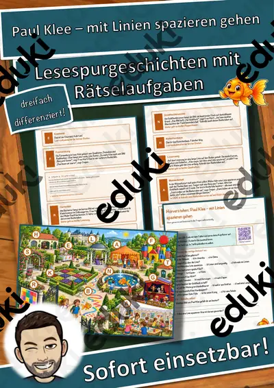
Paul Klee – mit Linien spazieren gehen – Lesespurgeschichte mit Rätselaufgaben (Klasse 3)
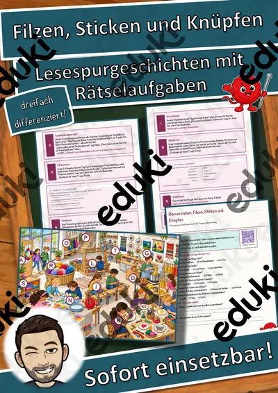
Filzen, Sticken und Knüpfen – Lesespurgeschichte mit Rätselaufgaben (Klasse 3)
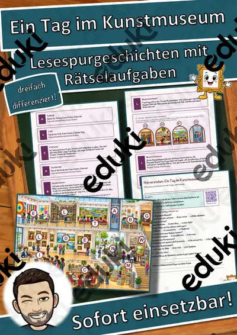
Ein Tag im Kunstmuseum – Lesespurgeschichte mit Rätselaufgaben (Klasse 3)
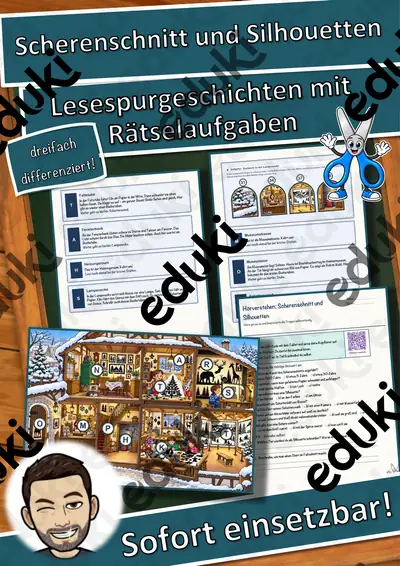
Scherenschnitt und Silhouetten – Lesespurgeschichte mit Rätselaufgaben (Klasse 3)
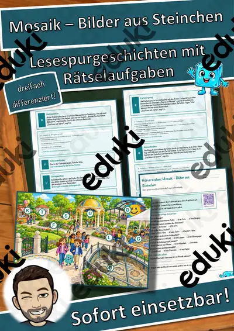
Mosaik – Bilder aus Steinchen – Lesespurgeschichte mit Rätselaufgaben (Klasse 3)
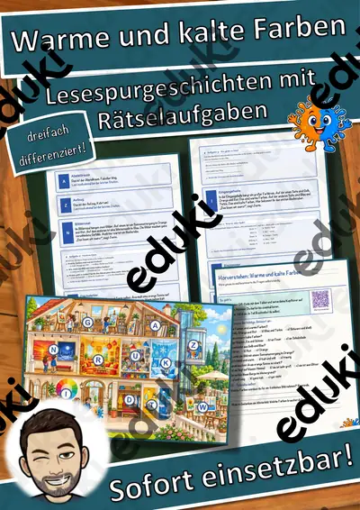
Warme und kalte Farben – Lesespurgeschichte mit Rätselaufgaben (Klasse 3)
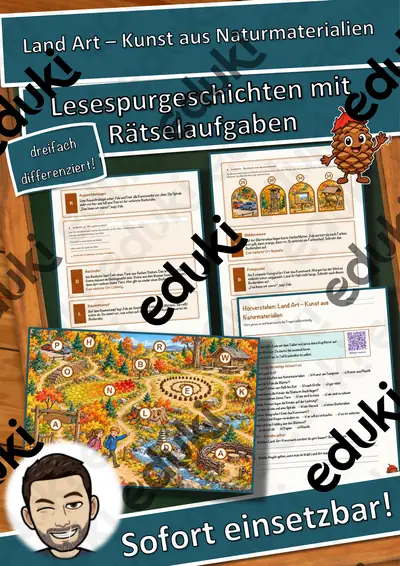
Land Art – Kunst aus Naturmaterialien – Lesespurgeschichte mit Rätselaufgaben (Klasse 3)

Kinderrechte weltweit – jedes Kind zählt – Lesespurgeschichte mit Rätselaufgaben (Klasse 3)
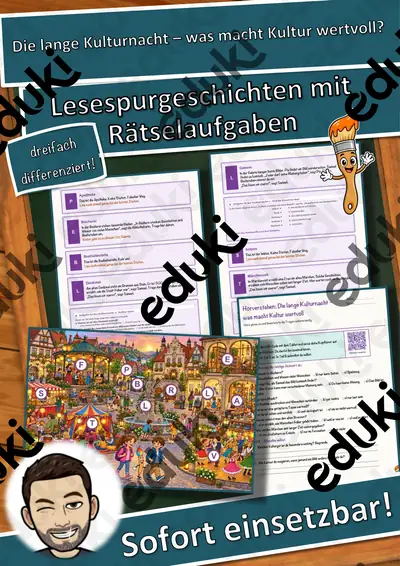
Die lange Kulturnacht – was macht Kultur wertvoll? – Lesespurgeschichte mit Rätselaufgaben (Klasse 3)
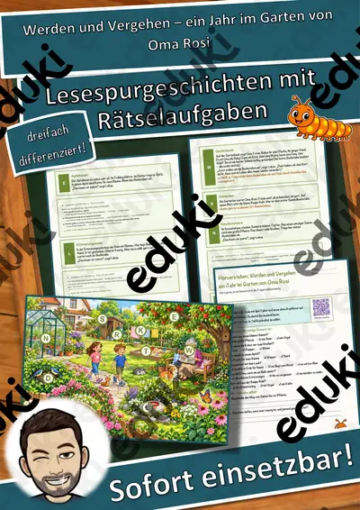
Werden und Vergehen – ein Jahr im Garten von Oma Rosi – Lesespurgeschichte mit Rätselaufgaben (Klasse 3)

Medien-Detektive unterwegs – Lesespurgeschichte mit Rätselaufgaben (Klasse 3)
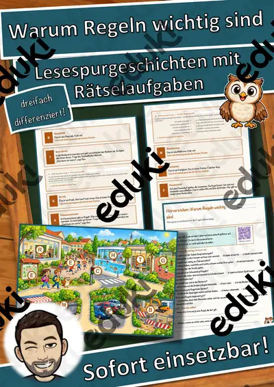
Warum Regeln wichtig sind – Lesespurgeschichte mit Rätselaufgaben (Klasse 3)
Ehrlich sein – Lesespurgeschichte mit Rätselaufgaben (Klasse 3)
Gefühle verstehen und zeigen – Lesespurgeschichte mit Rätselaufgaben (Klasse 3)
Was macht einen guten Freund? – Lesespurgeschichte mit Rätselaufgaben (Klasse 3)
Warum die Tanne grün bleibt – Lesespurgeschichte mit Rätselaufgaben (Klasse 3)
Der leise Winterwald – Lesespurgeschichte mit Rätselaufgaben (Klasse 3)
Wenn die Spinnen fliegen – Lesespurgeschichte mit Rätselaufgaben (Klasse 3)
Wenn dir kalt wird – Lesespurgeschichte mit Rätselaufgaben (Klasse 3)
Die grüne Kugel im Winterbaum – Lesespurgeschichte mit Rätselaufgaben (Klasse 3)
Das süße Wintergemüse – Lesespurgeschichte mit Rätselaufgaben (Klasse 3)
Warum frieren die Tiere nicht? – Lesespurgeschichte mit Rätselaufgaben (Klasse 3)
Das Eis am Dach – Lesespurgeschichte mit Rätselaufgaben (Klasse 3)
Wenn die Blätter bunt werden – Lesespurgeschichte mit Rätselaufgaben (Klasse 3)
Der kahle Winterbaum – Lesespurgeschichte mit Rätselaufgaben (Klasse 3)
Der sichtbare Atem – Lesespurgeschichte mit Rätselaufgaben (Klasse 3)
Weiß wie der Schnee – Lesespurgeschichte mit Rätselaufgaben (Klasse 3)
Der frostige Wintermorgen – Lesespurgeschichte mit Rätselaufgaben (Klasse 3)
Das Winter-Zielwerfen – Lesespurgeschichte mit Rätselaufgaben (Klasse 3)
Fit durch den Winter – Lesespurgeschichte mit Rätselaufgaben (Klasse 3)
Der Waldboden – Lesespurgeschichte mit Rätselaufgaben (Klasse 3)
Der Zwiebelgarten – Lesespurgeschichte mit Rätselaufgaben (Klasse 3)
Die Weihnachtsstube – Lesespurgeschichte mit Rätselaufgaben (Klasse 3)
Das Winterquartier – Lesespurgeschichte mit Rätselaufgaben (Klasse 3)
Der Schulbus – Lesespurgeschichte mit Rätselaufgaben (Klasse 3)
Das Iglu – Lesespurgeschichte mit Rätselaufgaben (Klasse 3)
Der Herbstwald – Lesespurgeschichte mit Rätselaufgaben (Klasse 3)
Die Schneespur – Lesespurgeschichte mit Rätselaufgaben (Klasse 3)

Der dunkle Schulweg – Lesespurgeschichte mit Rätselaufgaben (Klasse 3)
Der Ahornweg – Lesespurgeschichte mit Rätselaufgaben (Klasse 3)
Die Nebelwiese – Lesespurgeschichte mit Rätselaufgaben (Klasse 3)
Der Winterdienst – Lesespurgeschichte mit Rätselaufgaben (Klasse 3)
Der Eisstock – Lesespurgeschichte mit Rätselaufgaben (Klasse 3)
Die Schneekanone – Lesespurgeschichte mit Rätselaufgaben (Klasse 3)
Das Schneelabor – Lesespurgeschichte mit Rätselaufgaben (Klasse 3)
Das Laternenfest – Lesespurgeschichte mit Rätselaufgaben (Klasse 3)
Die Vogelzählung – Lesespurgeschichte mit Rätselaufgaben (Klasse 3)
Die Vogelscheuche – Lesespurgeschichte mit Rätselaufgaben (Klasse 3)
Der Wintersee – Lesespurgeschichte mit Rätselaufgaben (Klasse 3)
Der Apfelkeller – Lesespurgeschichte mit Rätselaufgaben (Klasse 3)
Der Kürbishof – Lesespurgeschichte mit Rätselaufgaben (Klasse 3)
Das Drachenfest – Lesespurgeschichte mit Rätselaufgaben (Klasse 3)
Die Rodelbahn – Lesespurgeschichte mit Rätselaufgaben (Klasse 3)
Der Eisbrecher – Lesespurgeschichte mit Rätselaufgaben (Klasse 3)
Die Schneeschuhwanderung – Lesespurgeschichte mit Rätselaufgaben (Klasse 3)
Der Christbaumhof – Lesespurgeschichte mit Rätselaufgaben (Klasse 3)
Die Winterfütterung – Lesespurgeschichte mit Rätselaufgaben (Klasse 3)
Die Lebkuchenbäckerei – Lesespurgeschichte mit Rätselaufgaben (Klasse 3)
Die Polarstation – Lesespurgeschichte mit Rätselaufgaben (Klasse 3)
Die Streuobstwiese – Lesespurgeschichte mit Rätselaufgaben (Klasse 3)
Die Sprungschanze – Lesespurgeschichte mit Rätselaufgaben (Klasse 3)
Die Huskyfarm – Lesespurgeschichte mit Rätselaufgaben (Klasse 3)
Die Kerzenwerkstatt – Lesespurgeschichte mit Rätselaufgaben (Klasse 3)
Der Kartoffelhof – Lesespurgeschichte mit Rätselaufgaben (Klasse 3)
Die Igel-Auffangstation – Lesespurgeschichte mit Rätselaufgaben (Klasse 3)
Die Feuerwache – Lesespurgeschichte mit Rätselaufgaben (Klasse 3)
Die Baustelle – Lesespurgeschichte mit Rätselaufgaben (Klasse 3)
Der Reiterhof – Lesespurgeschichte mit Rätselaufgaben (Klasse 3)
Das Schwimmbad – Lesespurgeschichte mit Rätselaufgaben (Klasse 3)
Der Schulgarten – Lesespurgeschichte mit Rätselaufgaben (Klasse 3)
Der Wertstoffhof – Lesespurgeschichte mit Rätselaufgaben (Klasse 3)

Der Kürbis – Lesespurgeschichte mit Rätselaufgaben (Klasse 3)

Wichtel beschreiben: Schreibanlass mit 4 Wichtelbildern, Wortspeicher und Checkliste (Klasse 3–4)

DaZ-Wortschatz Materialpaket: 6 Wortfelder differenziert A1/A2/B1 – Hörszenen (QR), Lückentexte, Rollenspiele, Sprechkarten

DaZ-Wortschatz Körper und Gesundheit – differenziert A1/A2/B1: Hörszene (QR), Lückentexte, Rollenspiel

DaZ-Wortschatz Unterwegs in der Stadt – differenziert A1/A2/B1: Hörszene (QR), Lückentexte, Rollenspiel

DaZ-Wortschatz Mein Zuhause – differenziert A1/A2/B1: Hörszene (QR), Lückentexte, Rollenspiel

DaZ-Wortschatz Kleidung und Wetter – differenziert A1/A2/B1: Hörszene (QR), Lückentexte, Rollenspiel

DaZ-Wortschatz Essen und Trinken – differenziert A1/A2/B1: Hörszene (QR), Lückentexte, Rollenspiel

DaZ-Wortschatz In der Schule – differenziert A1/A2/B1: Hörszene (QR), Lückentexte, Rollenspiel

Artemis - Griechische Götter - Lückentext mit Wortspeicher

Materialpaket Griechische Götter - Lückentexte mit Wortspeicher, Plakate und Ausmalbilder

Wortspiele: Sag es nicht! Sommer – Klasse 2–4

Wortspiele: Sag es nicht! Im Restaurant – Klasse 2–4

Wortspiele: Sag es nicht! Kochen und Backen – Klasse 2–4

Wortspiele: Sag es nicht! Obst und Gemüse – Klasse 2–4

Wortspiele: Sag es nicht! Im Garten – Klasse 2–4

Domino-Werkstatt: Domino Einmaleins mit Darstellungen – Plus-Paket, Klasse 2–4

Wortspiele: Sag es nicht! Haustiere – Klasse 2–4

Naturwerkstatt Grundschule Materialpaket: 3 Einheiten – Differenzierte Winterwerkstatt für Klasse 3 und 4 (Grundschule,

Naturwerkstatt Grundschule Naturwerkstatt Grundschule – Einheit 3: Pflanzen und Bäume in der Winterzeit – Differenzierte

Naturwerkstatt Grundschule Naturwerkstatt Grundschule – Einheit 2: Überlebensstrategien der Tiere im Winter – Differenzi

Naturwerkstatt Grundschule Naturwerkstatt Grundschule – Einheit 1: Winterwetter, Schnee und Eis – Differenzierte Winterw

Wortspiele: Sag es nicht! Zirkus – Klasse 2–4

Wortspiele: Sag es nicht! Märchen – Klasse 2–4

Wortspiele: Sag es nicht! Sport – Klasse 2–4

Wortspiele: Sag es nicht! Bauernhof – Klasse 2–4

Englisch-Werkstatt: Idioms: Englische Redewendungen – kostenlos, Klasse 3–4

Englisch-Werkstatt: I have, who has? Das Kartenspiel in der Schleife – kostenlos, Klasse 3–4

Englisch-Werkstatt: Tongue Teasers: Englische Zungenbrecher – kostenlos, Klasse 3–4

Englisch-Werkstatt: All about me: Ich stelle mich vor – kostenlos, Klasse 3–4

Englisch-Werkstatt: Read and Colour: Lesen und Ausmalen – kostenlos, Klasse 3–4

English Workshop: Read and Colour: Reading Practice – free, Grades 3–4

Englisch-Werkstatt: Idioms: Englische Redewendungen – Plus-Paket, Klasse 3–4

Englisch-Werkstatt: I have, who has? Das Kartenspiel in der Schleife – Plus-Paket, Klasse 3–4

Englisch-Werkstatt: Don't say it: Wörter beschreiben – kostenlos, Klasse 3–4

English Workshop: Idioms: Fun English Sayings – free, Grades 3–4

Englisch-Werkstatt: Tongue Teasers: Englische Zungenbrecher – Plus-Paket, Klasse 3–4

Englisch-Werkstatt: All about me: Ich stelle mich vor – Plus-Paket, Klasse 3–4

English Workshop: I Have, Who Has? The Loop Card Game – free, Grades 3–4

English Workshop: Don't Say It: Describe the Word Game – free, Grades 3–4

English Workshop: Tongue Teasers: Tricky Sentences to Say Fast – free, Grades 3–4

English Workshop: All about me: Introduce Yourself – free, Grades 3–4

English Workshop: Idioms: Fun English Sayings – Plus Pack, Grades 3–4

Präteritum – Übungsheft mit Postern, regelmäßige und unregelmäßige Verben Kl. 3–4

DaZ Zeit und Kalender: Wochentage, Monate, Jahreszeiten A1/A2/B1, QR

English Workshop: Read and Colour: Reading Practice – Plus Pack, Grades 3–4

Gedichte schreiben – Übungsheft mit Postern, Kl. 3–4

Wortspiele: Sag es nicht! Schule und Klassenzimmer – Klasse 2–4

Strom und Magnete – Forscherheft mit Versuchen, Postern und Stromkreis-Werkstatt Kl. 3–4

Daten & Diagramme zum Ausmalen – Strichlisten, Säulendiagramme Kl. 2–4

Englisch-Werkstatt: Adjectives & Adverbs – Describing Words, Poster und Spiele, Kl. 3–4

Satzglieder – Übungsheft mit Postern, Umstellprobe, Fragen und Satz-Baukasten Kl. 3–4

Weltall & Planeten zum Ausmalen und Basteln – Sonnensystem Kl. 2–4

English Workshop: Tongue Teasers: Tricky Sentences to Say Fast – Plus Pack, Grades 3–4

Wortspiele: Sag es nicht! Herbst – Klasse 2–4

Wörtliche Rede – Übungsheft mit Postern, Redebegleitsätzen und Comic-Dialogen Kl. 3–4

Erste Hilfe für Kinder – Arbeitsheft mit Postern, Notruf & Wunden Kl. 2–4

English Workshop: I Have, Who Has? The Loop Card Game – Plus Pack, Grades 3–4

English Workshop: Don't Say It: Describe the Word Game – Plus Pack, Grades 3–4

English Workshop: All about me: Introduce Yourself – Plus Pack, Grades 3–4

Persönlichkeiten-Werkstatt: Picasso – Steckbrief zum Lesen und Ausfüllen, Klasse 3–4 (kostenlos)

Persönlichkeiten-Werkstatt: Picasso – Plus-Paket mit Texten in 3 Stufen, Quiz und Aktion, Klasse 3–4

Persönlichkeiten-Werkstatt: Zeus – Steckbrief zum Lesen und Ausfüllen, Klasse 3–4 (kostenlos)

Persönlichkeiten-Werkstatt: Helen Keller Steckbrief

Persönlichkeiten-Werkstatt: Rosa Parks – Steckbrief zum Lesen und Ausfüllen, Klasse 3–4 (kostenlos)

Persönlichkeiten-Werkstatt: Zeus – Plus-Paket mit Texten in 3 Stufen, Quiz und Aktion, Klasse 3–4

Persönlichkeiten-Werkstatt: Rosa Parks Plus-Paket

Persönlichkeiten-Werkstatt: Helen Keller Plus-Paket

Persönlichkeiten-Werkstatt: Marie Curie – Steckbrief zum Lesen und Ausfüllen, Klasse 3–4 (kostenlos)

Persönlichkeiten-Werkstatt: Mozart – Steckbrief zum Lesen und Ausfüllen, Klasse 3–4 (kostenlos)

Persönlichkeiten-Werkstatt: Marie Curie Plus-Paket
Keine Materialien gefunden – versuch einen anderen Suchbegriff oder Filter.